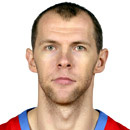
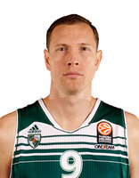
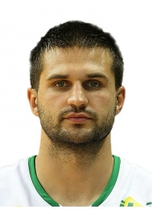
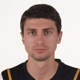

Svarbiausi Lietuvos nacionalinės vyrų krepšinio rinktinės laimėjimai.
Svarbiausi Lietuvos nacionalinės vyrų krepšinio rinktinės laimėjimai.
Europos čempionatas 2007 m.
Antrosios Europos vyrų krepšinio pirmenybės vyko Latvijos sostinėjė Rygoje 1937 m. Krepšininkus ruošė žaidžiantysis treneris Feliksas Kriaučiūnas. 1937 metais Lietuvos vyrų rinktinė į Europos čempionatą Rygoje atvyko būdami autsaideriais. Tačiau tai nesutrukdė Lietuvos rinktinei pirmą kartą tapti Europos čempionais.

1985 m.

1976 m.

(vyr. treneris)
1964 m.

Ramūnas Šiškauskas
1978 m.
1978 m.

1979 m.

Darius Songaila
1978 m.
1978 m.

1979 m.

Linas Kleiza
1985 m.
1985 m.

1977 m.

1980 m.

1982 m.

1984 m.

Giedrius Gustas
1980 m.
1980 m.

dddkdkkkkkkkv kkkkkkkkkkkk kkkkkk kkkkfgf df fffffffffffffffffffffkkkkkkkkkk ooooooooooo oooooooooooo
Informacija ir vaizdo klipai
| 2007 m. Europos čempionato galutinė rikiuotė | |||
|---|---|---|---|
| Komanda | Vieta | Komanda | Vieta |
| Rusija | 1 | Vokietija | 5 |
| Ispanija | 2 | Kroatija | 6 |
| Lietuva | 3 | Slovėnija | 7 |
| Graikija | 4 | Prancūzija | 8 |
| ... | 9-16 | ||